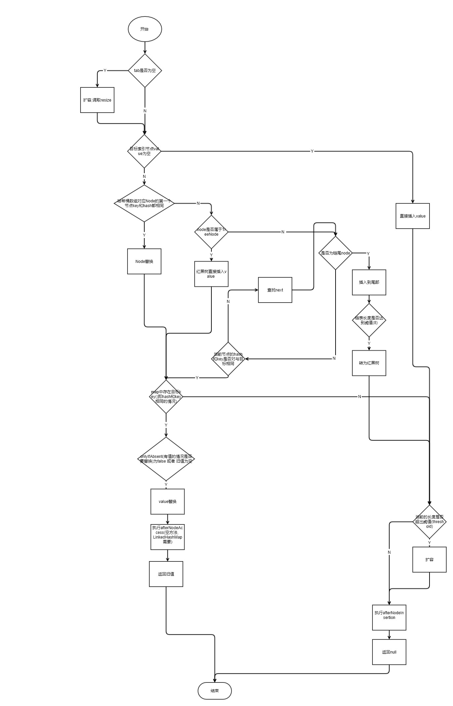

前言
本篇主要了解下HashMap的源码, 以便了解其常用方法的实现原理.本篇以android SDK API26内的Java源码为准
HashMap是什么
HashMap是基于实现Map接口的哈希表, 但是他和HashTable有一定的区别, 主要区分在HashMap可以传null的键值对, 而且他不是线程安全的, 如果需要支持同步, 则需要调用Collections.synchronizedMap(Map<K,V> m)方法. 同时, HashMap不能保证时间推移下map内顺序不变.
构造函数
国际惯例, 我们先看下他的构造函数, 他需要两个参数, 分别是初始容量initialCapacity(默认为 16)和负载因子loadFactor(默认为0.75f),
奇怪的是, threshold的注释说明它应该是等于初始容量 * 负载因子, 而在tableSizeFor()方法的计算中, 我们获取到的是初始容量的两倍数据, 这点我们先压下疑问往后看1
2
3
4
5
6
7
8
9
10
11
12
13public HashMap(int initialCapacity, float loadFactor) {
if (initialCapacity < 0)
throw new IllegalArgumentException("Illegal initial capacity: " +
initialCapacity);
if (initialCapacity > MAXIMUM_CAPACITY)
initialCapacity = MAXIMUM_CAPACITY;
if (loadFactor <= 0 || Float.isNaN(loadFactor))
throw new IllegalArgumentException("Illegal load factor: " +
loadFactor);
this.loadFactor = loadFactor;
// threshold 表示下次需要扩容时的容纳最大值(初始容量 * 负载因子), 如果超出这个值, 则会进行扩容
this.threshold = tableSizeFor(initialCapacity);
}
这里threshold的计算方法, 我们姑且看下, MAXIMUM_CAPACITY为1<<30, 位移运算后值为$2^{29}$1
2
3
4
5
6
7
8
9static final int tableSizeFor(int cap) {
int n = cap - 1;
n |= n >>> 1;
n |= n >>> 2;
n |= n >>> 4;
n |= n >>> 8;
n |= n >>> 16;
return (n < 0) ? 1 : (n >= MAXIMUM_CAPACITY) ? MAXIMUM_CAPACITY : n + 1;
}
这段代码的意思就是会获取等于或大于cap最小的2的幂次,我们以默认值默认值$2^4$为例尝试计算一下, 得到的结果是$2^5$.
get(Object key)
我们首先看下如果对HashMap进行查找.1
2
3
4public V get(Object key) {
Node<K,V> e;
return (e = getNode(hash(key), key)) == null ? null : e.value;
}
这里getNode才是真正用来实现Map.get的方法.要注意的是, 这里的定位哈希桶数组的位置的算法, 由于tab.length永远是2的幂次, 这里的(n - 1) & hash就相当于hash % n的操作, 而&比%具有更高的效率, 所以这里的位运算相当于是一个小的优化1
2
3
4
5
6
7
8
9
10
11
12
13
14
15
16
17
18
19
20
21
22
23
24
25
26
27
28
29
30
31
32/**
* 实现map的get方法
* Implements Map.get and related methods
*
* @param hash hash for key key的hash值
* @param key the key key
* @return the node, or null if none 返回目标节点, 如果没有则返回
*/
final Node<K,V> getNode(int hash, Object key) {
Node<K,V>[] tab; Node<K,V> first, e; int n; K k;
// tab为空, 并且获取到的目标节点不为空
if ((tab = table) != null && (n = tab.length) > 0 &&
(first = tab[(n - 1) & hash]) != null) {
// 如果hash和key相同
if (first.hash == hash && // always check first node
((k = first.key) == key || (key != null && key.equals(k))))
// 返回目标节点
return first;
if ((e = first.next) != null) {
// 红黑树情况
if (first instanceof TreeNode)
return ((TreeNode<K,V>)first).getTreeNode(hash, key);
// 链表情况
do {
if (e.hash == hash &&
((k = e.key) == key || (key != null && key.equals(k))))
return e;
} while ((e = e.next) != null);
}
}
return null;
}
put
同样, put的实际实现是以下方法1
2
3
4
5
6
7
8
9
10
11
12
13
14
15
16
17
18
19
20
21
22
23
24
25
26
27
28
29
30
31
32
33
34
35
36
37
38
39
40
41
42
43
44
45
46
47
48
49
50
51
52
53
54
55
56
57
58
59
60
61final V putVal(int hash, K key, V value, boolean onlyIfAbsent,
boolean evict) {
Node<K,V>[] tab; Node<K,V> p; int n, i;
// 如果tab为空, 则调用resize分配内存
if ((tab = table) == null || (n = tab.length) == 0){
n = (tab = resize()).length;
}
// 通过(n - 1) & hash]获取存入位置, 得到插入位置中的节点p
if ((p = tab[i = (n - 1) & hash]) == null)
// 节点p为空, 则直接插入
tab[i] = newNode(hash, key, value, null);
else { // 节点p不为空, 插入位置冲突
Node<K,V> e; K k;
// 与当前节点第一个节点相同(hash和key都相同)
if (p.hash == hash &&
((k = p.key) == key || (key != null && key.equals(k)))){
// 节点赋值tab[i]
e = p;
}
// 与第一个节点不相同
// 红黑树情况
else if (p instanceof TreeNode)
e = ((TreeNode<K,V>)p).putTreeVal(this, tab, hash, key, value);
// 链表情况
else {
// p从表头向后移动
for (int binCount = 0; ; ++binCount) {
// 如果移动到链表尾部
if ((e = p.next) == null) {
// 插入到尾部
p.next = newNode(hash, key, value, null);
// 如果达到链->树阈值
if (binCount >= TREEIFY_THRESHOLD - 1) // -1 for 1st
// 替换红黑树
treeifyBin(tab, hash);
break;
}
// 找到目标相同节点(hash&&key)
if (e.hash == hash &&
((k = e.key) == key || (key != null && key.equals(k))))
break;
// p后移 p = p.next
p = e;
}
}
// 处理hash和key相同的情况
if (e != null) { // existing mapping for key
V oldValue = e.value;
if (!onlyIfAbsent || oldValue == null)
e.value = value;
afterNodeAccess(e);
return oldValue;
}
}
++modCount;
// 如果size > threshold时, 进行扩容
if (++size > threshold)
resize();
afterNodeInsertion(evict);
return null;
}
put具体的流程图可以看下图

扩容resize
该方法主要作用就是针对map进行容量初始化或者扩容双倍容量, 另外, 扩容之后, 需要重新计算键值对的位置, 并移动到目标位置上.1
2
3
4
5
6
7
8
9
10
11
12
13
14
15
16
17
18
19
20
21
22
23
24
25
26
27
28
29
30
31
32
33
34
35
36
37
38
39
40
41
42
43
44
45
46
47
48
49
50
51
52
53
54
55
56
57
58
59
60
61
62
63
64
65
66
67
68
69
70
71
72
73
74
75
76
77
78
79final Node<K,V>[] resize() {
Node<K,V>[] oldTab = table;
int oldCap = (oldTab == null) ? 0 : oldTab.length;
int oldThr = threshold;
int newCap, newThr = 0;
if (oldCap > 0) {
// 超过最大容量, 无法扩容, 只能改变阈值
if (oldCap >= MAXIMUM_CAPACITY) {
threshold = Integer.MAX_VALUE;
return oldTab;
}
// 容量加倍
else if ((newCap = oldCap << 1) < MAXIMUM_CAPACITY &&
oldCap >= DEFAULT_INITIAL_CAPACITY)
// 阈值加倍
newThr = oldThr << 1; // double threshold
}
// 用阈值初始值新的容量
else if (oldThr > 0) // initial capacity was placed in threshold
newCap = oldThr;
// 当阈值==0的时候
else { // zero initial threshold signifies using defaults
newCap = DEFAULT_INITIAL_CAPACITY;
newThr = (int)(DEFAULT_LOAD_FACTOR * DEFAULT_INITIAL_CAPACITY);
}
if (newThr == 0) {
float ft = (float)newCap * loadFactor;
newThr = (newCap < MAXIMUM_CAPACITY && ft < (float)MAXIMUM_CAPACITY ?
(int)ft : Integer.MAX_VALUE);
}
threshold = newThr;
({"rawtypes","unchecked"})
Node<K,V>[] newTab = (Node<K,V>[])new Node[newCap];
// 将旧tab中的Node转移到新tab中, 分链表和红黑树两种情况
table = newTab;
if (oldTab != null) {
for (int j = 0; j < oldCap; ++j) {
Node<K,V> e;
if ((e = oldTab[j]) != null) {
oldTab[j] = null;
if (e.next == null)
newTab[e.hash & (newCap - 1)] = e;
else if (e instanceof TreeNode)
((TreeNode<K,V>)e).split(this, newTab, j, oldCap);
else { // preserve order
Node<K,V> loHead = null, loTail = null;
Node<K,V> hiHead = null, hiTail = null;
Node<K,V> next;
do {
next = e.next;
if ((e.hash & oldCap) == 0) {
if (loTail == null)
loHead = e;
else
loTail.next = e;
loTail = e;
}
else {
if (hiTail == null)
hiHead = e;
else
hiTail.next = e;
hiTail = e;
}
} while ((e = next) != null);
if (loTail != null) {
loTail.next = null;
newTab[j] = loHead;
}
if (hiTail != null) {
hiTail.next = null;
newTab[j + oldCap] = hiHead;
}
}
}
}
}
return newTab;
}
resize做了两步工作, 一步是计算新的阈值和容量, 一步是键值对重新映射.
之前我们有个疑问, 就是threshold的注释明明标注它说是等于初始容量*负载因子, 而在我们的tableSizeFor内并没有看到相关的逻辑代码, 这个问题就可以在这里得到解决.
方法的前段逻辑如下:
- 判断当前哈希桶数组(
oldCap)是否有值, 即哈希桶数组已经被初始化- 有且长度超过最大值, 则不做扩容
- 有且没有超过最大值, 如果扩容后仍然小于最大值, 则做扩容处理
- 但是, 当哈希桶数组没有数据
- 初始阈值(
oldThr)有值且大于0 , 哈希桶数组容量长度直接沿用老的阈值大小 - 初始阈值没有设置时, 阈值就会设为 加载因子 * 容量
- 初始阈值(
- 如果新设置的阈值等于0, 则会赋值为加载因子 * 新的容量大小
removeNode
删除的动作与上面的比较来说, 就容易理解了.
主要可以分为三个动作:
- 寻找定位哈希桶数组索引位置
- 遍历链表找到键值相等的节点
- 删除目标节点
1 | final Node<K,V> removeNode(int hash, Object key, Object value, |
总结
本篇主要解释了几个常用方法的实现原理, 在此做下记录. 不过关于红黑树的相关知识, 就不在这里多加说明了.